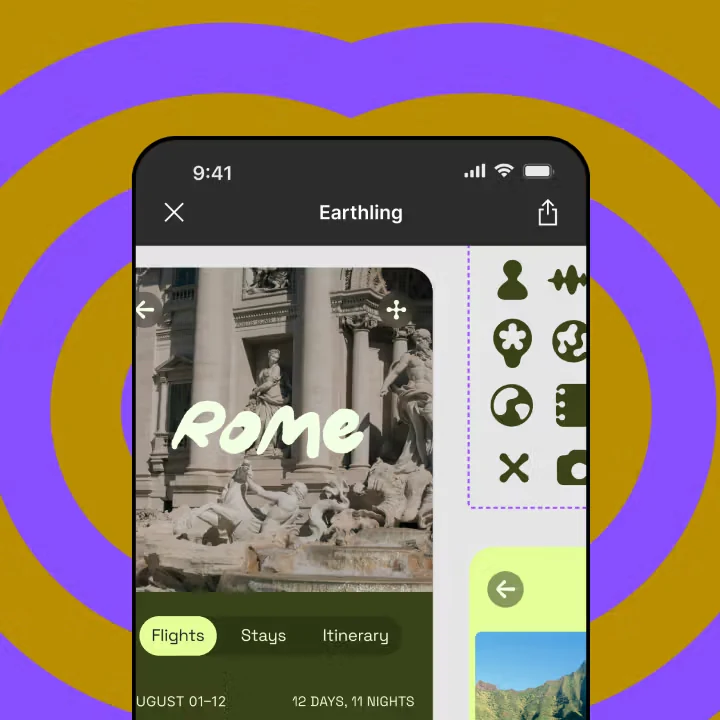
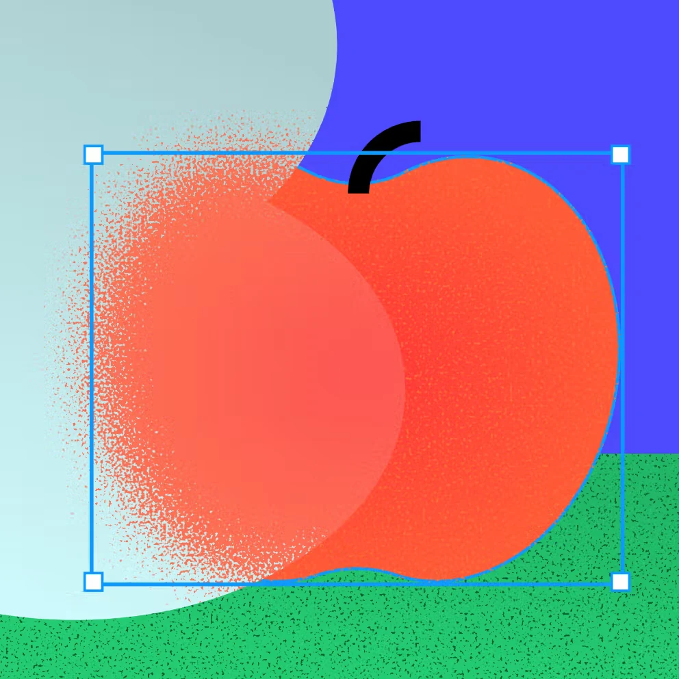
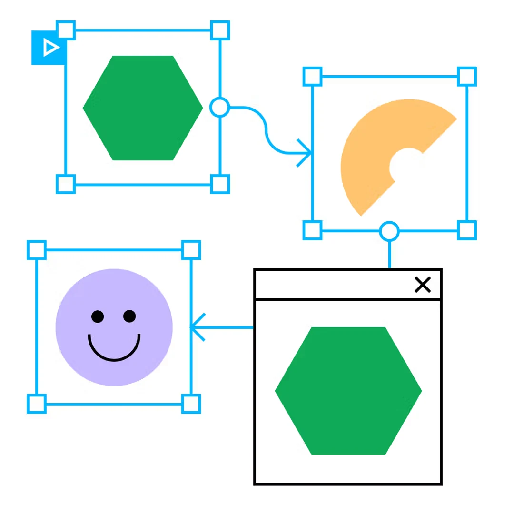

Task before layout
Start with the job the user needs to finish. Layout should be a consequence of task priority, not a collection of fashionable components.
Good product design is not decoration added after requirements. It is the deliberate organisation of information, actions, feedback and states so a person can move through a task with less uncertainty.



The screen should explain itself before the user starts reading instructions. Hierarchy, spacing, type, component behavior and responsive adaptation all work together to create that clarity.
Start with the job the user needs to finish. Layout should be a consequence of task priority, not a collection of fashionable components.
Size, contrast, position and whitespace should tell the eye where to begin, what matters next and what can wait.
Type scales, spacing, radii, colors and component states should behave as a system so later screens remain consistent without manual policing.
Loading, empty, error, success, disabled, focus and validation states are part of the product—not edge cases to add at the end.
Mobile should not be a squeezed desktop. The interaction, information priority and touch behavior should be reconsidered for the smaller context.
Readable contrast, clear focus, predictable controls and comfortable touch targets improve the interface for everyone, not only compliance.
Write the primary job, supporting jobs, business constraint and success signal before opening Figma.
Sketch the shortest useful path plus alternate routes, failure states and return paths.
Define type, spacing, color, radius, grid and basic component behavior before multiplying screens.
Use Figma prototypes to prove navigation, feedback and interaction—not only page-to-page transitions.
Test long names, no data, small devices, keyboard focus and different content density before calling the design finished.